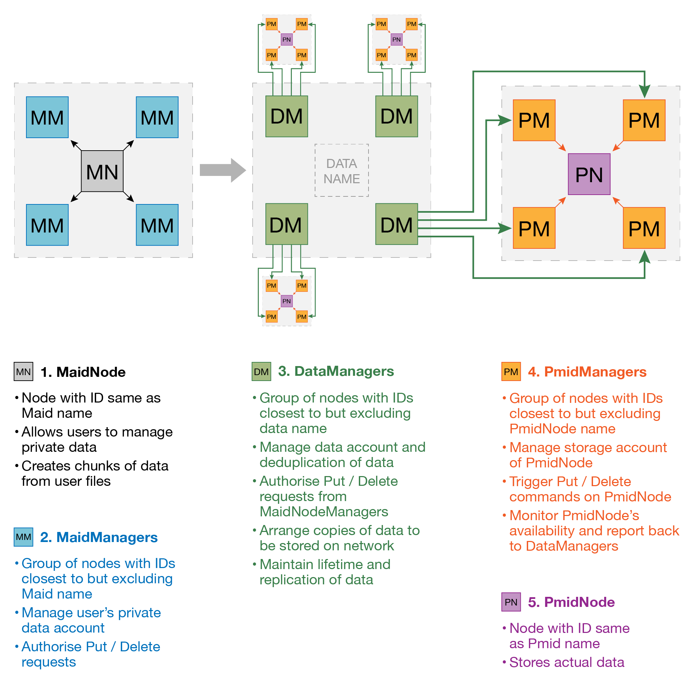

Vault Overview
The MaidSafe Network consists of software processes (nodes), referred to as vaults. These vaults perform many functions on the network and these functional components are referred to as personas. The underlying network, when linked with MaidSafe-Routing, is an XOR network and as such a node may express closeness or responsibility to any other node or element on the network, if the node is in relative close proximity to the target. In this summary the phrase NAE (Network Addressable Element) is used to refer to anything with a network address including data.
The vaults rely on MaidSafe-Routing to calculate responsibilities for NAE via the relevant API calls such as
GroupRangeStatus IsNodeIdInGroupRange(const NodeId& group_id, const NodeId& node_id) const;
GroupRangeStatus IsNodeIdInGroupRange(const NodeId& group_id) const;
bool EstimateInGroup(const NodeId& sender_id, const NodeId& info_id) const;
These calls allow us to calculate the network from the perspective of any NAE we may be responsible for. It cannot be stressed enough that the ONLY way to determine responsibility for an NAE is to see the network from the perspective on the NAE. If we sort the vector of nodes we know about and their close nodes (referred to as the group matrix) and we do not appear in the first K (replication count) nodes then we are not responsible for the NAE. This is a fundamental issue and the importance of this cannot be emphasised enough.
As the network is very fluid in terms of churn and vault capabilities the vault network must measure and report on individual vaults and importantly ensure all the personas of any vault are performing their tasks for the NAE they are responsible for. To facilitate this, Routing’s Matrix change (Churn Event) feature is used. In the event of any churn around a given network segment, a Matrix change object is created by Routing and passed on to Vault. This object contains list of old and new nodes in group matrix. Based on this information, it provides helper function to derive certain information related to any given NAE. If the node getting churn event is among first k nodes closest to provided NAE. If yes, which new node(s) need information related to the provided NAE. If not, delete any information stored related to the given NAE.
Churn, duplication of data and ensuring all members of a group agree is handled by a combination of synchronisation, the accumulator and group messages. This is a complex set of rules that requires significant attention to edge cases.
Terms and Conventions Used
Please be aware that these terms are extensively used and this document is rendered unreadable without these being completely understood.
- Sy - Sync, this function synchronises data between nodes in the same group (closely connected).
- Sr - Sync, this function synchronises result of message between nodes in the same group (closely connected).
- So - Send On, this function send the message on to the next persona.
- Ac - Accumulate, This function accumulates messages from previous personas (the personas sending the message to the current persona).
- Fw - Firewall, this function ensures duplicate messages are prevented from progressing and answers such messages with the calculated response (such as success:error:synchronising etc. and may include a message containing data)
- Uf - Update Firewall, this function will update the firewall with the newly calculated return code and optional message.
- Bold represents Indirect Network Addressable Entities INAE
- Italic represents Direct Network Addressable Entities DNAE
- ->>>> represents a group message (no callback)
- -> represents a direct message (no callback)
- =>>>> represents a group message (with callback)
- => represents a direct message (with callback)
Maidsafe Identities
The MaidSafe Network consists of many data types as well as many identity types. These identities are described in MaidSafe-Passport. The personas are particularly focussed on 4 of these identities and ensures the appropriate entities satisfy the requirements enforced by these identities.
- MAID (MaidSafe Anonymous ID) - The client identity to manipulate non structured data. A client can have one of these.
- PMID (Proxy Maidsafe ID) - The client identity to safely store non structured data. A client can have many of these.
- MPID (Maidsafe Public ID)- The client identity to allow public id's (public network names, such as a persons name or nickname) to communicate securely. A client can have many of these.
- MSID (Maidsafe Share ID) - The client identity to manager groups of MPID's to privately share data (structured and non structured). A client can have many of these. This type of identity has no NAE holder for security purposes.
Vault Personas
The personas employed by MaidSafe vaults fall into two distinct categories, namely Data Management and Node Management. These categories define the actions and grouping of the nodes and their knowledge of the surroundings and messages.
- Data Management nodes are responsible for NAE specifically data, usually pointers to data.
- Node Management personas are responsible for an entity persona (node) and manages the actions and requests by that entity persona.
Incoming messages are demultiplexed to identify the persona and data type they are destined for. The message is then directed to that persona.
Generalised Data Management
Unversioned Data
Storing a piece of data onto the network requires coordination and collaboration by several Personas. A chunk of data from user data is created at MaidNode and is managed by DataManagers. DataManagers ensures that several copies of data are stored and available at distant PmidNodes all the time. The following diagram shows a very basic flow of data storage process on the network.

| Data Management | Node Management | Nodes |
|---|---|---|
| DataManager | MaidManager | MaidNode |
| VersionManager | PmidManager | PmidNode |
Put<Data>
| MaidNode [So]=>>>>|[Ac, Fw] MaidManager [So, Sy]->>>> | [Ac, Fw] DataManager [So,Sy]->>>> 4|[Ac, Fw] *PmidManager [So, Sy]=>| [Ac, Fw]PmidNode |
Put<Unique> (a specialisation)
| MaidNode [So]=>>>>|[Ac, Fw] MaidManager [So, Sy]=>>>> | [Ac, Fw] DataManager [So,Sy]->>>> 4|[Ac, Fw] *PmidManager [So, Sy]=>| [Ac, Fw]PmidNode |
Delete<Data>
| MaidNode [So]=>>>> |[Ac, Fw] MaidManager [So, Sy]->>>> | [Ac, Fw] DataManager [So, Sy]->>>> 4| [Ac, Fw] *PmidManager [So, Sy] =>|[Ac, Fw]PmidNode |
Get<Data>
| MaidNode [So]=>>>> | [Ac, Fw] DataManager [So]=> * (# of live PmidNodes)|[Ac, Fw] PmidNode |
Anatomy of a Manager Persona with Non-Versioned Data
All personas follow a very similar pattern, they accumulate, firewall, handle and send on messages, and synchronise their results, whereupon agreement they record the result of an operation in a database. The results or values stored per operation differ with differing personas, but little else does.
In practice, it is a priori assumed that nodes on the network are untrustworthy, however, cooperating/collaborating nodes are essential to the continued stability and health of the network. To ensure both conditions are met when receiving from an INAE, the group of nodes, under the guise of a known specific persona, surrounding the target element become responsible for validating the request. Synchronisation between the group allows each to accumulate one another's result to a predetermined number sufficient to satisfy the request. The process inherently detects message tampering or would-be hackers and with a ranking mechanism in place serial offenders are forced into network isolation.
When receiving from a DNAE each persona accumulates on a single message only. This is possible since a connection exists between the nodes and that both routing and rUDP have confirmed the other nodes identity in a cryptographically secure manner.
The variety of non-data messages are handled distinctly by each persona.
Versioned Data
Storing a piece of versioned data such as a directory version onto the network is handled by different personas based on the privacy settings of the directory defined by the user. Privacy settings include private, public and shared versioned data. Different Identities are employed based on the privacy settings associated with the directories. Though different versioned data is created and forwarded by different personas, all of it is managed and stored onto the VersionManager. The following diagram shows a very basic flow of the versioned data storage process on the network based on different privacy settings.

PutVersion<Data>
Put <Data>| MaidNode [So]=>>>>|[Ac, Fw] MaidManager [So, Sy]->>>> | [Ac, Fw] DataManager [So,Sy]->>>> 4|[Ac, Fw] *PmidManager [So, Sy]=>| [Ac, Fw]PmidNode | +
- | MaidNode [So]=>>>>|[Ac, Fw] MaidManager [So, Sy]->>>> | [Ac, Fw, Sy, Uf] VersionManager |
GetVersion<Data>
- | MaidNode [So]=>>>> | [Ac, Fw] VersionManager | +
Get<Data>| MaidNode [So]=>>>> | [Ac, Fw] DataManager [So]=> * (# of live PmidNodes)|[Ac, Fw] PmidNode |
DeleteVersionTillFork<Data>
Delete<Data>| MaidNode [So]=>>>> |[Ac, Fw] MaidManager [So, Sy]->>>> | [Ac, Fw] DataManager [So, Sy]->>>> 4| [Ac, Fw] *PmidManager [So, Sy] =>|[Ac, Fw]PmidNode | +- | MaidNode [So]=>>>> | [Ac, Fw, Sy, Uf] VersionManager |
Anatomy of a Manager Persona with Versioned Data
These VM personas all must agree on the request as it is received. To accomplish this, the VM personas keep accumulating the messages received from previous personas. Once the expected limit is reached the request is synced with other VM personas in the group. Any VM persona receiving expected number of sync messages attempts to perform the request. Performing the request will be followed by returning the result of the action to the accumulator and calling reply functors associated to the requests from previous personas. Again Get simply attempts to return the self-calculated answer for speed, but all mutating calls require agreement with all the VersionManager personas involved in the call. This is a crucial difference with the non-versioned data managers. This difference is due to these personas being the ultimate answer to the request and sync is used for agreement rather than self-calculating the answer and leaving this up to the requester to agree on.
Generalised Communications Management
| Node Management | Node |
|---|---|
| MpidManager | MpidNode |
Data Management Personas
Data management personas are responsible for maintaining links between NAE keys and the addresses of the NAE that contains the content of the key in question. These vaults personas can be considered as managers of pointers to data as well as data lifetime and replication management, with the ability to withstand network churn.
Data Manager
The DataManager persona manages pointers to non versioned data, such as file contents, network keys as defined in passport and any other 'static' data elements.
Container Structure
Uses a unique ManagerDb
- Key : data key + type
- Value : DataManagerValue object (serialised)
Messages In
Put<Data>This message is received from a MaidManager group (of K)and is accumulated. The database is checked for the existence of the key. If it exists then the subscriber count is incremented. If no record exists then each of the Data Managers of this group closes to the NAE being stored selects a connected node as a PmidNode to store on (if the message has a Data Holder hint then the closest of the data managers of this NAE attempts to store there). To store a chunk aPUT<Data>(key, content) message is sent to the PmidManagers responsible for the selected PmidNode.- | MaidManager ->>>> | [Ac, Fw]DataManager[So, Sy]->>>>|
Delete<Data>This message is received from a MaidManagers group (of K)and is accumulated. The database is checked for the existence of the key. If it exists then the subscriber count is decremented. When the count reaches zero (if it ever does) then a Delete(key) is sent to all PmidManagers to delete the data.- | MaidManager ->>>> | [Ac, Fw] DataManager [So, Sy]->>>>|
Get<Data>This message is not accumulated, only fire-walled. This message can come from any persona, although should not reach this persona very frequently due to caching. If this message does reach here then the DataManager sends a GET direct to a PmidNode and retrieves the data, sending it back via the reply_functor passed by routing.- | MaidNode ->>>> | [Ac, Fw] DataManager | (firewall)
Node Status Change| PmidManager ->|[Ac, Fw] DataManager [So, Sy]->>>> |
Messages Out
Put<Data>When a data element is first stored or a DataManager requires to add another PmidNode to store data (due to PmidNodes failing, switching off otherwise losing data) this Nfs call is made to store the data.- | DataManager [So, Sy, Uf]->>>> | PmidManager |
Delete<Data>When the subscriber count approaches zero or the PmidNode is deemed to not be responsible for a data element any longer this Nfs call is made.- | DataManager [So, Sy, Uf]->>>> | PmidManager ->|
Get<Data>In response to recieving a Get this node will attempt to retrieve the data from any live PmidNode and will send the data back to the requester via the Routing reply_functor provided with the request.- | DataManager => * live PmidNodes| PmidNode |
Data Integrity Checks
In response to a churn event, (detected from Node Status Change as below) the DataManager will create a random peice of data and send this to each PmidNode with a request to append this data and hash the data again and respond with the new value. This allows the DataManager to evaluate that all PmidNodes hold the same data (not corrupted or lost).
- | DataManager [So, Sr]=>>>> 4| *PmidManager ->| PmidNode |
Version Manager
The VersionManager, manages versioned data. This currently includes data that can be defined in StructuredDataVersions. Private data directories, private shared directories and public directories are currently managed in this structure. This persona is not limited to requiring versions and can consequently be used for structured data of many types with ease.
Container Structure
Uses a unique ManagerDb
- Key : data key + type + Entity ID
- Value : StructuredDataVersions object (serialised)
Messages In
PutVersion<Data>- | MaidManager =>>>> | [Ac, Fw] VersionManager [Sy, Uf] |
DeleteBranchTillFork<Data>- | MaidManager =>>>> | [Ac, Fw] VersionManager [Sy, Uf] |
Get<Data>- | MaidNode =>>>> | [Ac, Fw] VersionManager |
GetBranch<Data>- | MaidNode =>>>> |[Ac, Fw] VersionManager |
Messages Out
[None] All inputs are callbacks
Node Management Personas
Node management personas, manage entity personas (nodes).
Maid Manager
The MaidManager function is to manage the MaidNode. This means ensuring the client has an account and at least one registered PmidNode.
Container Structure
Uses the AccountDb
- Key : Hash of the data key (hashed to protect clients data)
- Value : Number of copies (int32) : total cost (int32)
Header Structure
- Total Data size Stored
- Available Space
Messages In
PUT<Data>A client can store an anonymous MAID packet on the network which creates the account. Then the MaidNode must register a PmidNode and does so with a vault registration packet, which is signed by the MAID and PMID private keys (that the client must have access to). The individual MaidManager will query the PmidManager group on start-up, churn event and client running low on space to ensure the PmidNode has enough offered space. On success, the MaidNode can send the data to the relevant DataManager and retrieve the cost to be paid. On retrieval of the cost, the intention to record the entry in the database is synchronised with the other MaidManagers. The MergePolicy in this case will add the key to the database and/or increment the number of copies and total cost field.- | MaidNode ->>>> | [Ac, Fw]MaidManager [So]|
Delete<Data>The MaidManager will search the account record of the MAID client account for a corresponding PUT of the data key. On success the MaidManager will reduce the number of PUT chunks of that key. If multiple chunks are stored in the same key the cost is reduced by taking an average of the total cost paid for that key. Delete always returns success as the client only wastes it's own time in trying an attack of that nature.- | MaidNode =>>>> | [Ac, Fw] MaidManager [So] |
PutVersion<Data>- | MaidNode =>>>> | [Ac, Fw] MaidManager [So] |
DeleteBranchTillFork<Data>- | MaidNode =>>>> | [Ac, Fw] MaidManager [So] |
Register/Unregister vault- | MaidNode =>>>> | [Ac, Fw] MaidManager [So] |
Messages Out
PUT<Data>- | MaidManager [So] ->>>> | DataManager |
Delete<Data>- | MaidManager [So] ->>>> | DataManager |
PutVersion<Data>- | MaidManager [So] =>>>> | VersionManager |
DeleteBranchTillFork<Data>- | MaidManager [So] =>>>> | VersionManager |
GetPMIDHealth- | MaidManager [So] =>>>> | PmidNode |
Pmid Manager
The PAH (Pmid Account Holder) function is to manage the Pmid client. This means ensuring the client has an account and an accurate record of data elements held and any lost (early version of rank).
Container Structure
Uses the AccountDb
- Key : Data key
- Value : Size (int32)
Header Structure
- Total Data size Stored
- Total Data Size lost
- Available Space
Messages In
Put<Data>Store data on PmidNode and update stored counts for that PmidNode- | DataManager =>>>> | [Ac, Fw] PmidManager |
Delete<Data>Send delete to PmidNode and remove from stored counts for that pmidnode- | DataManager ->>>> | [Ac, Fw] PmidManager |
Get<Data>Return data or error- | DataManager =>>>> | [Ac(1), Fw] PmidManager |
Lose<Data>Send delete to PmidNode and add to lost countGetPMIDHealth- | MaidManager =>>>> | [ PmidManager | (no Fw or Ac, answer every call)
Messages Out
- | MaidManager =>>>> | [ PmidManager | (no Fw or Ac, answer every call)
SendAccountThis is sent to a PmidNode when it rejoins the group. This will be detected by the PmidManager on reciept of a churn event. The account in this case is all data the PmidNode should have stored and will not include any deleted or lost data that occurred whilst the PmidNode was off line.- | PmidManager [So]-> | PmidNode
Mpid Manager
The MPAH (Mpid Account Holder) function is to manage the Mpid client. This means ensuring the client has an account and a blacklist or whitelist if required by the client. This persona will also hold messages destined for an Mpid client who is currently off-line.
Container Structure
Uses the AccountDb
- Key : MpidName + SenderMpidName + messageID
- Value : message contents
This database should only hold records while MpidNode is off-line.
Header Structure
- whitelist
- blacklist
Messages In
Message- | MpidNode =>>>> | thisMpidManager [So]|
- | MpidManager =>>>> | thisMpidManager [So]|
AddToWhiteList- | MpidNode ->>>> | thisMpidManager [Sy]|
RemoveFromWhiteList- | MpidNode ->>>> | thisMpidManager [Sy]|
WhiteList- | MpidNode =>>>> | thisMpidManager [Sy]|(reply with whitelist)
AddToBlackList- | MpidNode ->>>> | thisMpidManager [Sy]|
RemoveFromBlackList- | MpidNode ->>>> | thisMpidManager [Sy]|
BlackList- | MpidNode =>>>> | thisMpidManager [Sy]|(reply with blacklist)
Messages Out
MessageOn receipt of a message the lists are checked and the message is sent on. If the node is off-line then the message is stored locally, on receipt of a churn event the off-line list is checked for messages and these are sent to the client.- | thisMpidManager [So] -> | MpidNode | (may come from database)
- | thisMpidManager [So] =>>>> | MpidManager [Sy]| (live message from remote MpidNode)
Entity personas
Pmid Node
Messages In
Put<Data>- | PmidManager -> |[Ac, Fw] PmidNode
Delete<Data>- | PmidManager -> |[Ac, Fw] PmidNode
Get<Data>- | DataManager => |[Ac, Fw] PmidNode
SendAccountThis is sent to a PmidNode when it rejoins the group. This will be detected by the PmidManager on reciept of a churn event. The account in this case is all data the PmidNode should have stored and will not include any deleted or lost data that occurred whilst the PmidNode was off line.- | PmidManager -> |[Ac, Fw] PmidNode
Messages Out
[none]
Maid Node
Messages In
[none]
Messages Out
Put<Data>Returns error_code and PmidHealth- | MaidNode [So]=>>>>| MaidManager |
Delete<Data>Returns error_code- | MaidNode [So]=>>>>| MaidManager |
Get<Data>Returns error_code and data (if success)- | MaidNode [So]=>>>>| DataManager |
Mpid Node
Messages In
Message- | MpidNode =>>>> | thisMpidManager [So]|
- | MpidManager =>>>> | thisMpidManager [So]|
AddToWhiteList- | MpidNode ->>>> | thisMpidManager [Sy]|
RemoveFromWhiteList- | MpidNode ->>>> | thisMpidManager [Sy]|
WhiteList- | MpidNode =>>>> | thisMpidManager [Sy]|(reply with whitelist)
AddToBlackList- | MpidNode ->>>> | thisMpidManager [Sy]|
RemoveFromBlackList- | MpidNode ->>>> | thisMpidManager [Sy]|
BlackList- | MpidNode =>>>> | thisMpidManager [Sy]|(reply with blacklist)
Messages Out
[none]
Synchronisation
The network is in a constant state of flux, with nodes appearing and disappearing continually. This forces a state change mechanism that can recognise which nodes are responsible for what data in real time and recognising churn events near a node. Using MaidSafe-Routing the network can detect node changes in a very short time period. Routing also provides a mechanism that can guarantee with great precision which nodes are responsible for which NAE (including the node querying the network).
To resolve a data element, whether an account transfer or unresolved action then the node requires a majority of close nodes to agree on the element. As there can be multiple churn events during a transfer of such data, the node requires to handle this multiple churn event itself. To do this with each churn event the new node and old nodes are handled by checking if the old node had given a data element and replace this node_id with the new node id. If the data element did not contain the new node but should have (i.e. the new node would have been responsible for an unresolved element) then the new node_id is added as having sent the data. To make this a little simpler, all synchronise data has the current node added as having 'seen' the element, this helps with the majority size required. When a node adds itself to unresolved data in this manner it adds itself to the end of the container. This will prevent the node sending this element in a synchronise message.
When a node sends a synchronise message it sends a unique identifier and it's own id with the unresolved data. Each receiving node creates a container of the node_id and entry_id along with the unresolved data. When the size of this container is 0.5 * the close node size +1 then the data is resolved and written to the data store.
There are two types of data which require cumulative data (from a group) to resolve:
synchroniseThis is data that has not yet been synchronised (unresolved), but this node has 'seen' itself. This data contains the action required to be taken with the attributes to take that action, this can be thought of as a function (message type) and parameters to be applied.account transfer, this type of data has been resolved and stored by the node. It is sent as the database value to be stored.
Synchronise to Validate Actions
Synchronise is used to ensure all nodes in the same close group responsible for a NAE agree on the data related to that NAE prior to storing (or performing) that related data. Nodes achieve this by creating a container of data to be resolved. For such data an unresolved entry may be added to the container when
- the message is received from previous persona
- an unresolved entry is received from similar persona (in a group) for a target the node is responsible for
The unresolved entry associated with data becomes resolved once the number of unresolved entries received for that data (from previous and similar personas) reaches an expected number. A node having resolved an entry may take part in sending to other node(s) deemed responsible for the data, ONLY if the node has received the data from a previous persona.
Using routing to confirm responsibility a manager node will check all data held to ensure it is still responsible for the data (via the routing api). The node then checks which data the new node should have (if any). The data is sent to the new node as unresolved data.
This process continues and each time the data is sent a counter is incremented, when this counter reaches a parameter (initially 100) the data is deemed non-resolvable and removed. When data does resolve it is not removed from the list as there could be further nodes to be added to the peer container component (we resolve on a majority and expect a unanimous number of nodes to be added and do not wish to create a new unresolved entry). When there are a complete set of peers who have sent the data (unanimous agreement) then the unresolved entry is removed.
Account Transfer
Manager personas storing the information for nodes/data usually deliver their functionality based on cumulative decision making, where a group of close nodes co-operate to realise the desired functionality. Obviously, the correct decisions to a large extent depend on how well the group members are synchronised. The dynamic nature of the network, where a node in a group may leave or join, necessitates the demand for implementing efficient mechanisms to ensure each member of any group is synchronised with other group members and hold the most up to date information for any node/data it is responsible for.
As a new node enters a group, it is sent account transfer messages, it's own address is added to an unresolved account transfer record (it is the close group -1 node) to ensure the group size calculations do not change although the group size cannot equal the system group size as this node is replacing a now missing node from that group.
The account transfer record is a database entry and requires agreement and then writing direct to the database.
In addition unresolved data is provided to this node and again this node add's it's own id to this data, however, it does not synchronise this data back to the close group as all nodes have taken care of this as they picked up this new node in the churn event. The unresolved data should now resolve as per the above process.
Accumulator
When receiving messages from a group of nodes, the network requires authority for the message to be validated. This is done by accumulating messages as they arrive after checking they come from a group that is responsible for sending the data (validated via routing api) and accumulating the messages until we receive at least close group -1 messages if the message comes from a manager node group. Messages that come from DNAE nodes accumulate on that single message. These nodes are verifiable as they are connected and will have performed an action to validate they are authorised to send that message.
Firewall
When a message has been accumulated it is added to the firewall. This firewall will check any incoming messages and reply with the current error_code (and message if required by that message type). The error_code may be synchronising in cases where the accumulating node has accumulated enough messages to ensure they are valid, but cannot make a decision yet on the 'answer' to the message (it may require to synchronise or even send a message to another persona to retrieve further info).
Caching
Caching is a very important facet of distributed networks. Cache data is likely to be stored in memory as opposed to disk. Currently two caching mechanisms have been defined that vaults aimed to stick with. The following sections present a general discussion, for the detailed implementation description, please have a look at Caching .
Opportunistic Caching
Opportunistic caching is always a first in first out (FIFO) mechanism. In response to a Get each node in the chain will add any cacheable data (such as self checking or immutable) to it's FIFO. This has many advantages:
- Multiple requests for the same data will speed up automatically.
- Denial of service attacks become extremely difficult as the data simply surrounds the requester of that data if continually asked for.
- Important data is faster when it's important and slows downs otherwise, making good use of network resources.
- Close nodes can become temporary stores of data very easily, allowing many advantages to system designers.
- If for instance a web site were located in a public share then that site would increase in speed with more viewers, this is a more logical approach than today's web sites which can run the risk of overload and crash.
Deterministic Caching
This type of caching is not yet implemented.
Deterministic caching allows the network to effectively expand the number of nodes holding data and pointers to data when the data is accessed by a large number of nodes or users. This allows the network to cope with extremely popular data sets that may represent a microblogging technology that has extremely popular accounts.
In addition to this type of caching the network allows subscription lists, where identities can register to be alerted when a change happens that they wish to track, such as a microblogging site or a popular web site for news etc.
NFS Policies
The API to the vault network is via Nfs policies and these are found in the nfs library.
Ranking
Misbehaving nodes require to be recognised by the network and acted on, likewise very helpful and well behaved nodes should command greater respect from other nodes. To achieve this a ranking mechanism is employed. This ranking mechanism in the vault network currently handles nodes that lose or otherwise corrupt data. This can be for many reasons such as:
- Poor bandwidth capability
- Slow cpu
- Infrequent availability (machine mostly off line for any reason)
- Hard drive corruption
- Hard drive being tampered with (users deleting system data)
- And many more
Rather than measuring each element, which would be very expensive and complex, the network instead measures the amount of data a node can store and compares this with the data it loses. These figures together allow a calculation on the available space and it's worthiness, with a high rate of lost to stored making the vault itself less valuable.